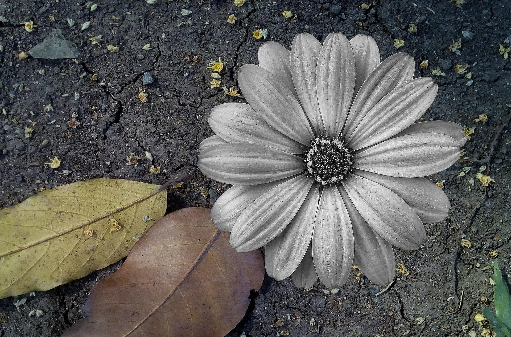
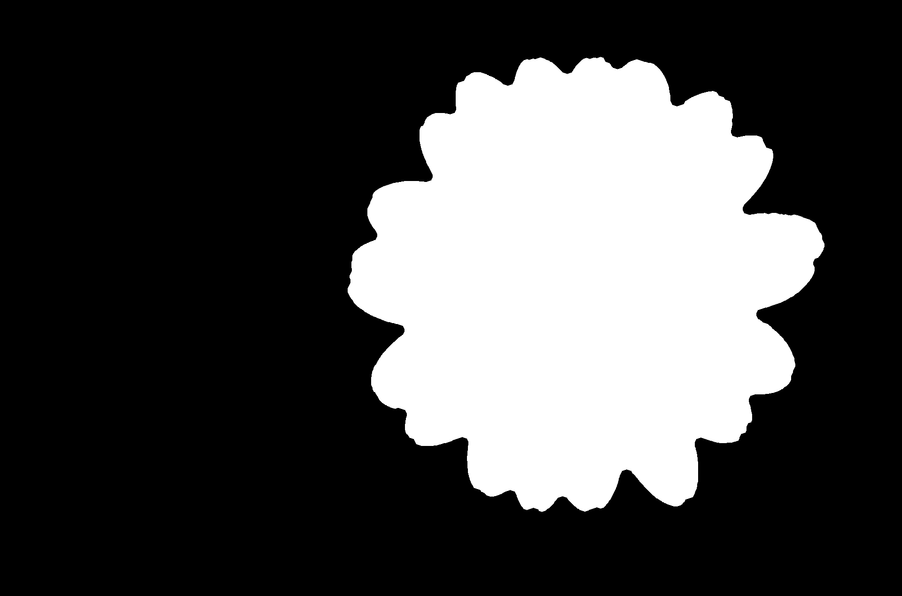
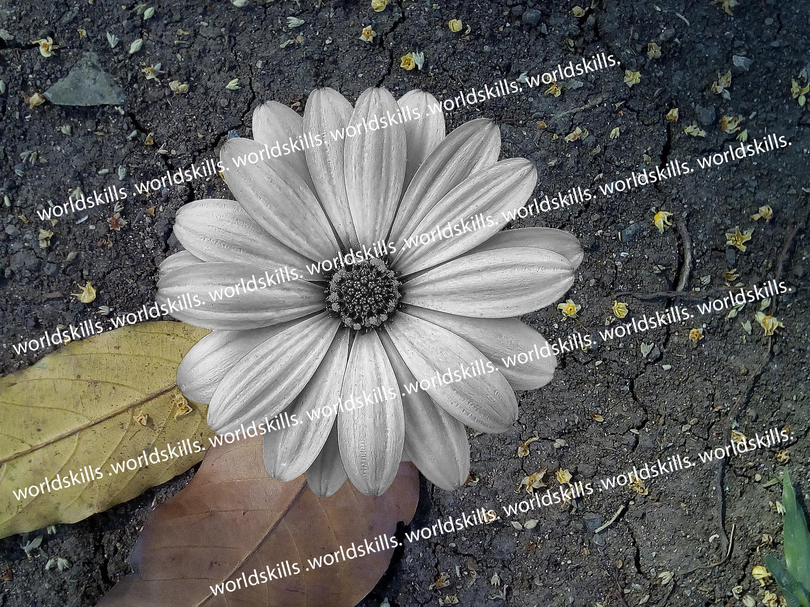

A01: Masking Image
把 flower.jpg 轉成灰階，將花朵去背後合成到 background.jpg 上。
成品

成品：灰階花朵合成到落葉泥土背景

去背用的遮罩

題目提供的參考範例（含浮水印）
製作方式
- 把 flower.jpg 轉成 HSV，觀察到花瓣是低飽和度的淡粉色（S 約 80），紫色背景則是高飽和度（S 約 170 以上）。
- 用飽和度門檻建立 GrabCut 的初始標記：S > 170 標為確定背景，明亮且低飽和的花瓣核心侵蝕後標為確定前景。
- 執行 GrabCut 精修輪廓，再取最大連通區域、閉運算補花瓣縫隙、泛洪填滿花蕊空洞。
- 遮罩做高斯羽化當作 alpha，把灰階化的花朵與縮放後的背景做 alpha 合成。
產生成品的完整程式：build.py（Python + OpenCV）
使用素材
flower.jpg：來源花朵照片background.jpg：落葉泥土背景sample_with_watermark.jpg：題目提供的參考成品